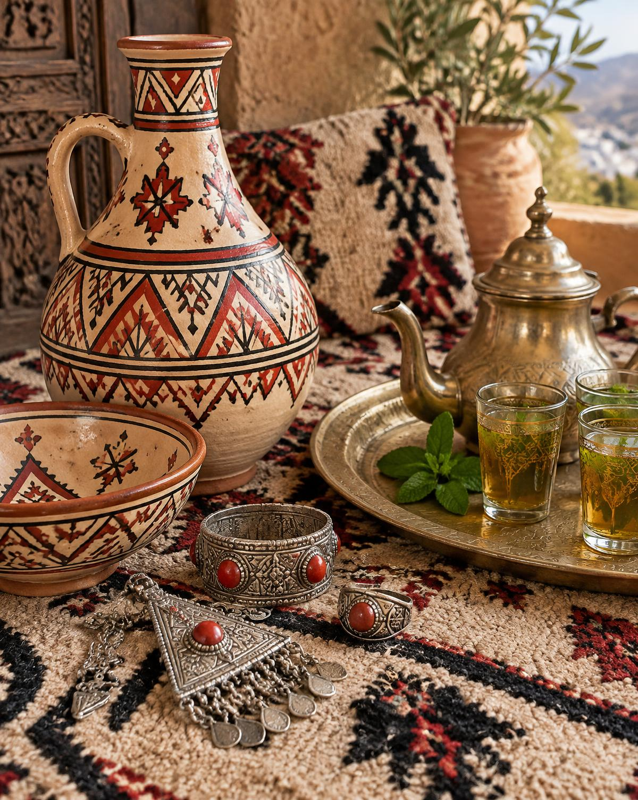

مرحبا بكم
Bienvenue en Algérie
Découvrez l'Algérie
De la Casbah blanche aux dunes dorées du Sahara, un pays immense où se rencontrent Méditerranée, montagnes et désert.
Introduction
الجزائر
Une terre de lumière et d'histoire
Bordée par la Méditerranée au nord et ouverte sur le Sahara au sud, l'Algérie offre une incroyable diversité de paysages : plages, forêts de cèdres, chaînes de l'Atlas, oasis et immensités désertiques. C'est aussi un pays de mémoire, riche de cités antiques, de médinas et de traditions vivantes.
Le plus grand pays d'Afrique
De côtes méditerranéennes
Inscrits au patrimoine de l'UNESCO
Autant de régions à explorer

Identité culturelle
التراث
Un patrimoine vivant
L'identité algérienne est une mosaïque. Elle se lit dans les motifs des tapis, résonne dans la musique et se partage autour d'une table généreuse.
-
01
Un héritage pluriel
Numides, Romains, Arabes, Andalous et Ottomans ont façonné une identité unique, enracinée dans la culture amazighe.
-
02
Musique & poésie
Du raï d'Oran au chaâbi d'Alger, en passant par le malouf de Constantine, chaque région chante son âme.
-
03
Art de vivre
Couscous partagé, thé à la menthe, poteries peintes et bijoux d'argent : l'hospitalité est un art.
Destinations
وجهات
Quatre visages de l'Algérie
De la mer au désert, laissez-vous guider vers les lieux incontournables du pays.